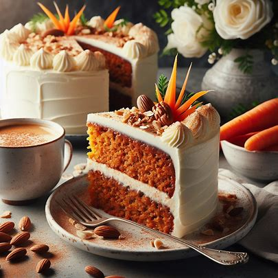
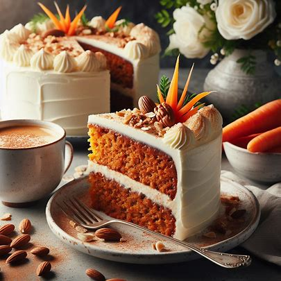
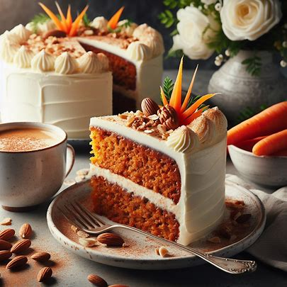
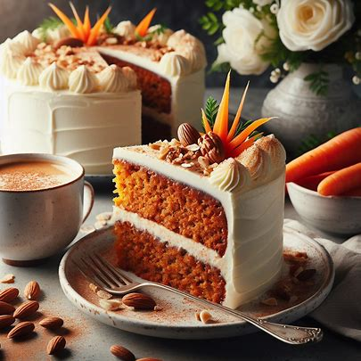

Tällä sivustolla käsitellään porkkanakakkua. Löydät sivustolta porkkanakakun taustatietoa ja linkkejä resepteihin esimerkiksi gluteenittomiin ja vegaanisiin porkkanakakkuihin. Voit myös jättää oman reseptisi.
Porkkanakakun tarkkaa syntymisaikaa on vaikea sanoa varmasti. Historioitsijat uskovat, että sitä alettiin tarjoilla Keskiajalla. Keskiajalla sokerin kallis hinta ja sen vaikea saatavuus sai ihmiset makeuttamaan jälkiruokansa luontaisesti makeilla vihanneksilla kuten esimerkiksi kesäkurpitsoilla. Tällöin tarjottu porkkanalla makeutettu jälkiruoka oli todennäköisesti enemmän vanukas kuin kakku. 1800-luvulla porkkanakakun suosio nousi sen oltua osa ranskalaisen keittokirjan reseptistöä. Toisen maailmansodan aikana Britanniassa porkkanakakusta tuli erittäin suosittu. Suosion taustalla oli elintarvikkeiden säännöstely ja terveellisten tuotteiden kuten porkkanan kasvatus. 1900-luvun puolessa välissä amerikkalainen tuorejuustoyritys mainosti tuorejuustolla kuorrutetun porkkanakakun reseptiä, ja 1970-lukuun mennessä amerikkalaiset pitivät kakkua terveysruokana ja alkoivat kuluttaa sitä massoittain. Suomeen porkkanakakku rantautui muiden amerikkalaisherkkujen kuten cookieiden mukana 1990-luvulla. Porkkanakakku olikin 1990-luvun trendileivonnainen.